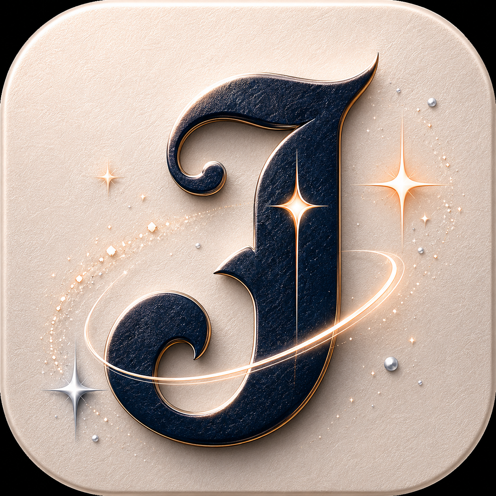

Ocoee Studios LLC
jotzi
Reminders that stick. Jotzi is a gentle companion for Smart Loops, tiny sparks, private Vault notes, and future Apple Watch nudges.

Smart Loops
Jotzi keeps unfinished things gently coming back until they are done.
Private Vault
A locked place for sensitive reminders, private sparks, and personal notes.
Watch Spirits
Future Apple Watch support can turn Jotzi spirits into soft wrist nudges.
Reminder Recipes
Start routines like Morning Reset, Health Routine, Errand Loop, and more.
Health-aware concepts
Future HealthKit signals can help Jotzi soften reminders around sleep and recovery.
Sparks
Catch tiny ideas before they disappear, then turn them into loops later.